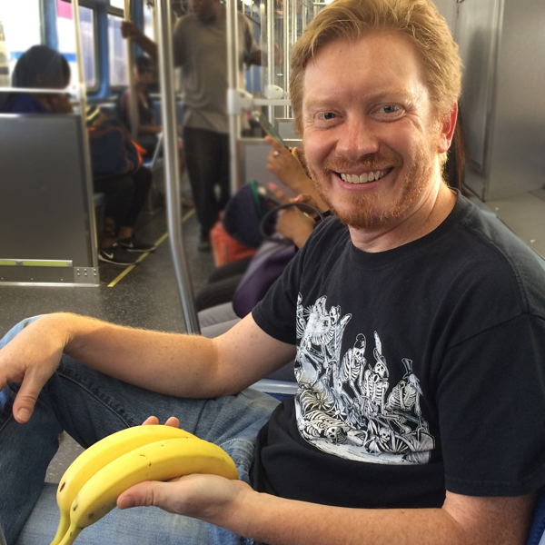
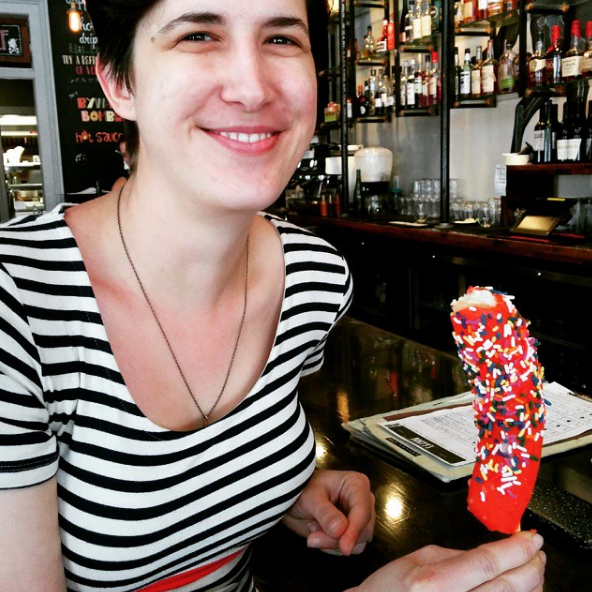
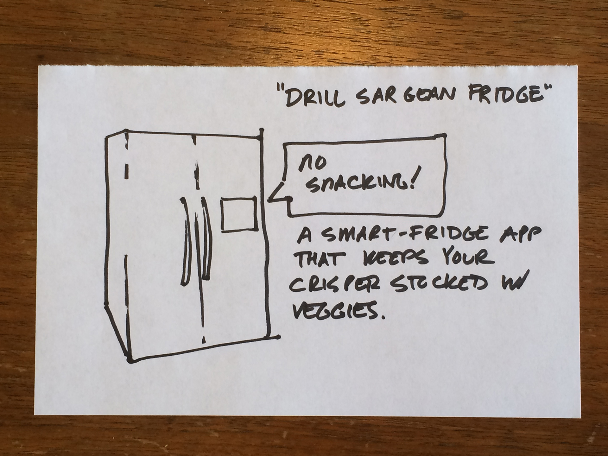
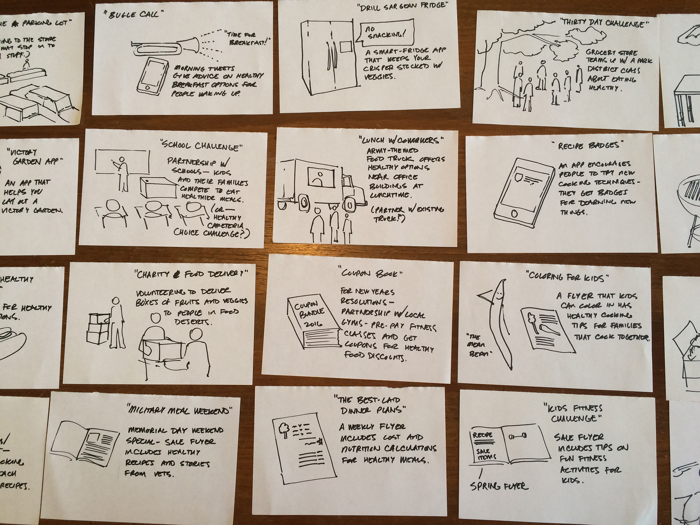

Who are we?

John Jung
Programmer/AnalystUniversity of Chicago Libraries

Kathy Zadrozny
Web Developer and Graphic Design SpecialistUniversity of Chicago Libraries
John: Programmer/Analyst in the Digital Library Development
Center at the University of Chicago Library. Graduate of the Design Methods
program at the Institute of Design in Chicago.
Kathy: Web Developer and Graphic Design Specialist in the
Digital Library Development Center. In addition to her work at the library
Kathy is a co-founder of the Letter Writers Alliance- an organization with over
7,000 members worldwide, dedicated to keeping the tradition of letter writing
alive.
Our work at the DLDC tends to center around web design and development. We're just launched a new library website and are in the process of using UX testing to improve features and functionality.
Introduce yourself.
What's your name?
Where do you work?
What's your favorite food?
Agenda: Research
1:15-1:25 (10 min) Research overview
1:25-1:40 (15 min) Research discussion
Agenda: Brainstorming Session
1:40-1:45 (5 min) Overview
1:45-2:35 (50 min) Generating Ideas
2:35-2:45 (10 min) Break
Kathy: Then we'll draw to generate ideas- we'll make quick
sketches to think through different ways to respond to that problem.
Agenda: Sorting & Ranking Ideas
2:45-2:50 (5 min) Overview
2:50-3:05 (15 min) Ranking and choosing ideas
Agenda: Prototyping
3:05-3:10 (5 min) Overview.
3:10-3:30 (20 min) Develop presentations.
3:30-3:50 (20 min) Presentations
3:50-4:00 (10 min) Summary, more resources, going further.
Kathy: Then we'll make short presentations to tell the group about the idea you chose and why it solves a problem.
IIT Design's Flickr
John: These Institute of Design students are designing tea kettles. Check out the messy table, with different kinds of teapots or coffee makers. They're going to look at different existing solutions for making tea, see how they work, and try to come up with something new.
Right now they're presenting research they did about how people prepare and drink tea, and how tea fits into their lives.
Including research into your decision making process is important. It's going to help keep your work grounded. Although wild, fun ideas are great for learning, in a real world situation you'll want to be sure you're solving a problem that atually exists.
IIT Design's Flickr
John: Here, two students are talking through lots of different ideas for their design. By having different materials around, like glass, metal, or plastic, they can quickly experiement with the kinds of materials that might get used in the final product. As a side note, one of my favorite things about this picture is the chart on the wall in the background. It contains a bunch of tea-related puns- including t-shirts, teepees and t-rex. These might just be a tangent, or they might provide inspiration for the final project. Because they're coming up with a lot of different ideas it's fine that some of them are a little out there.
IIT Design's Flickr
By now the students have combined the work they did in their research and in their idea generating sessions to narrow in on specific directions for their work. Now the prototypes can start to get refined, and the students can feel confident that they're refining ideas that solve real problems, because of their research, and that explore the best possible solution, because they explored a range of possible solutions before committing to one.
Now that they have a prototype that looks more "real", they can show it to potential users and get feedback on it. That feedback becomes the input to another round of the process, where they can refine existing ideas or come up with new ones.
One of the things I like about this is that the teapot in the front looks a bit like a teepee. I'm not sure if that's a happpy accident or if it was on purpose.
Today we're going to be making a "fuzzy front end" prototype-we'll be exploring the first part of this process.
The fuzzy front end is the part of the design process where we know we have a problem to solve, but we haven't yet decided on a specific way to solve the problem- we're still thinking through options. The solution might be a digital interface, like a website or an app for a smart phone, tablet, or even a smart watch. But it could also be some kind of physical object or in-person service.
To go through the entire prototyping process takes more time than we have, and it takes people with traditional design skills to make polished objects, interfaces, or documentation for services. Fortunately though, the beginning of the process of designing something doesn't require as much traditional design skill- so we can easily work with people who have other skill sets and backgrounds.
Although we'll be working fast, with only a little extra work you could polish up the kinds of sketches you make today and show them to patrons to see what they think, or you build off of the narrative you came up with in your skit to talk through potential solutions in a little more detail.
Why Use a Fictional Example?
We wanted to give you something to work on that is outside of your day-to-day work. If you're new to brainstorming, hopefully this will make it easier to try it out.
It helps us invent organizational strategies and goals that lend themselves to brainstorming.
It gives you practice synthesizing input from different places.
Our design process
Research.
Brainstorming Session.
Sorting and ranking ideas.
Prototyping.
Kathy: with this goal in mind, we'll be using this design process. [explain].
To dig into the topic of food and eating choices, John is going to talk through the research we are going to solve our problem.
Research:
Did you purchase exactly the items on your list?
If you bought off list, why? (Display, labeling, etc)
Did you try something new?
Now: First bit of research • Next: Secret Shoppers
More research: Secret Shoppers
Choose the right place.
Find high-traffic locations near the front of the store or along busy paths.
We learned that it's important to choose the right place to introduce people to something new.
Important displays are often located in the entryway of the store, or along the most common path people use to find their way around the store. For example, in my local Whole Foods, the entryway contains a sign advertising the whole foods app, along with the weekly sale flyer and even some displays for foods that are on sale. Just inside the door, in the produce section, is a display with some really good but pretty expensive guacamole.
Displays often incorporate a table- it creates a place along the path to stop. Compare this to an endcap for a sale item that doesn't have a table.
One woman used a shopping cart to create a mobile display- she could walk up to people in line at the butcher counter and get them to try a sample while they waited. While I watched she sold a lot of cottage cheese.
One woman said, "don’t bother putting the granola display next to the granola—or even the milk. Put it along a path in the store that gets a lot of traffic."
This is relevant in the world of libraries. When we've asked people where they learn about new things at our library, they invariably say "signage that was placed right by the entry control station."
Choose the right time.
This granola display was very successful before a big football game- it seemed like people were looking for an alternative to traditional game day snacks.
This is the woman with the granola stand advice from our last slide. She also had good advice on timing- she gave out samples the weekend of a big football game and managed to sell a lot of granola. People come into the grocery store looking to solve an immediate problem- they need food for something. If you offer something that solves their problem, you have a better chance of convincing them to try something new that if it was totally random.
Again, this relates to the world of libraries. During finals week, we've put on a coloring event for people to relax and unwind- it was very well attended.
Match customer needs.
Live conversations let product reprentatives focus on a benefit like taste, health, or cost that might make sense to a specific shopper.
One of the reasons there are live people giving out samples is so that they can figure out what you're looking for in a product, and then they can highlight those aspects of the product to you. Yogurt might be tasty, good for you, or on sale-a live person can figure out which of those things you're looking for.
Similarly, when it comes to signage and printed materials, people see words they’re on the lookout for. If people are looking for things without gluten, they’ll see the word "gluten" on the package. Other people won’t know the word is there.
We observed this in libraries looking at the kinds of library news stories people click on. When people know a little bit about a topic, they were more likely to click to learn more.
“Would you like to try one?”
Often, people need a little encouragement to try something new.
One thing that most people giving out samples told us was that many people need to be asked "would you like to try one?" before they would try.
Our problem:
Flipman Foods
How might Flipman Foods encourage food choices that are healthy for our customers, profitable for us, and sustainable for the environment?
Brainstorming Session
"I don't think about discarding ideas.
- Yoko Ono
In a meeting it is common to hear someone say "let's brainstorm this problem." Rather than working from a blank slate, we feel brainstorming works best when you start with a few existing ideas and modify them.
S.C.A.M.P.E.R.
Substitute with something new.
Combine with something else.
Adapt a piece.
Modify: make it bigger or smaller.
Put the idea to another use.
Eliminate a part.
Reverse the way it works.
Example
Ok, so starting from the prompt…the mean bean.
The first thing I came up with was a smartphone app that is like a bugle call. It’s an alarm clock that wakes you up and gives you tips on healthy breakfast options. So- what parts are there in this idea. It’s a digital thing, a smartphone app, and it’s got a personality. It works at a certain time of day. I could use it on vacation, but it seems like it’s mostly designed to be used at home.

Ok, so using the M from SCAMPER, modifying this, I came up with the drill seargent app for a smart fridge. It yells at you for snacking and encourages you to keep the crisper full of veggies. This modifies two things actually- the time you use the thing (from morning to evening) and the type of digital thing- from a smartphone app to a smart object app. (If there will be apps for refrigerators, I’ll be ready.) Already I can imagine a few other things- smart phone apps for lunch or dinner, or apps for smart watches.
Ok, let’s try another one. “Reverse” is always fun, and a bit odd. How could we reverse the mean bean? Maybe by making the personality nice instead of mean. What could that be like? Ok, thinking of military stuff, and world war 2…I start thinking about victory gardens. What if the grocery store had a popup garden in the parking lot. The parking lot would look pretty, and neighborhood gardeners might shop more. So there are a few things here- this idea is a service, and there’s no digital part. Maybe there is a digital idea related to this one. I also realized that at this point I hadn’t done anything inside the grocery store yet- so I start thinking about ideas for the entryway of the store and busy paths inside the store too. (Thinking about our secret shopper research and choosing good places.)

So remember- wild ideas are fine. From the teapot example we’re in the picture with t-shirts, teepees, and t-rexes. Just because these ideas are wild it doesn’t mean that some part of them might not make it to a final product. Ready to practice?
Now you try!
Choose a prompt.
Now: Half page sketches • Next: Choose a solution
Prompts
How the Heck Do I Cook This?Vegetable identification and preparation tips for the chronically nervous.
Tequila MockingbirdMatches cocktails to books.
Dungeons & Dragons Dinner PlansRecipe plans and meals for D&D hosts
Luncha LibreHelping you create great weekday lunches for your kids or yourself
Bread PittBread recipes made by celebrities.
End at 2:35
Choose a solution
“I wish somebody had given me the news that ideas don’t just fall on your head like fairy dust. You have to treat that like a job. You have to spend hours each day, where you’re just like, ‘This is the part of the day when I’m looking for an idea.’ ”
-Ira Glass
When you have a pile of ideas, you have to find some kind of a way to choose what you're going to do. One of the simplest ways to do this is to start arranging your ideas in two dimensions.
You can pick different axes, but here we're choosing effort and reward. To start, label four post-it notes "low effort", "high effort", "low reward" and "high reward".
Now: Plotting your ideas • Next: Voting on ideas
Now, as a group, think about how you'd place the ideas you generated into this space. Think roughly about how hard it would be to execute an idea and how much value people would get from it. Take 10 minutes to place the ideas where they make sense in this space.
Voting
Now: Voting on ideas • Next: Awesome solutions
Now, use the dots we're passing out to vote. Each person take three dots and place them on your favorite ideas.
The one with the most dots wins. If you have a tie let us know and we'll help you with a trick for breaking ties.
Awesome solutions
Now: Awesome solutions • Next: Break
Break!
Be back at 2:45
Another letter from our C.E.O.
Presentations
“And by the way, everything in life is writable about if you have the outgoing guts to do it, and the imagination to improvise. The worst enemy to creativity is self-doubt.”
-Sylvia Plath
Now you try!
Three "acts"
The specific problem you're solving.
How someone discovers and interacts with your solution.
One positive outcome.
Props
Sharpies, paper, humans.
End at 3:30
Be sure to focus on the narrative of how your solution works.
We say "three act", because we want you to show what problem you're solving, how people interact with your solution, and how your solution changes things.
Presentations should be just a few minutes each- less than five minutes for presenting, and then a few minutes to talk after each presentation.
Awesome Final Presentations
Last letter from our C.E.O.
Real World Example
"When I was asked to join the group, it felt like I was being asked to jump out of an airplane. This meeting gave me the instructions on how to use a parachute."
-Linked Data Futures Group member
In the beginning of this workshop we said that we chose a fictional topic for three reasons: first, we hope that it will make you feel comfortable trying something that might be new and unfamiliar. Second, it lets us experiment with organizational strategies that lend themselves to brainstorming. And third, it gives you practice synthesizing input from a source that is very different from your day-to-day work environment. Hopefully it was also fun and memorable- we want to make it easy to retain this information. In practice, a fictional topic means that you will have to modify these techniques for a work environment. We were able to do a brainstorming workshop at work recently, and we were pleased to find out how well this material mapped to a real world problem. At our library we are looking for ways to experiment with linked data. Some people put a group together to brainstorm a sample linked data project that the library could do to “get it’s feet wet” and learn more. They had a meeting to brainstorm solutions, and the question came up, “How do we choose which idea to pursue?” Kathy pitched the effort/reward matrix as a way to decide. The group was interested, so we got assigned the task of facilitating a meeting for them. We sensed that some people in the group were a little shaky with linked data, so we did some background research and came up with a framework for brainstorming linked data projects. This was analogous to what we did in the beginning of this workshop with our secret shopper background research and “tips on getting people to try samples.” We found example linked data projects and grouped them into five categories: internal data management, producing linked data, consuming linked data, collaborating with other institutions, and serendipity. We put together a 15 minute slide deck to introduce people to this. On one hand, we wanted this to “level the playing field”, so that the people new to linked data would be able to participate. But we also wanted to give people a framework to brainstorm in. This really worked. People tended to express their ideas using the language we used, although they brought extra technical expertise from their different backgrounds. Some things were very different. Rather than doing “pie in the sky” brainstorming like we did today, we focused on being practical and finding ideas that gave us “the best bang for our buck.”
We also encouraged people to brainstorm individually, before our next meeting. In practice I find that I like brainstorming alone better than in a group, and having a few days to play with ideas is really helpful. In the end the session was really successful. We got positive feedback from the meeting organizer, who complimented us on the energy of the session. We also got a great compliment from a participant, who said that “when she was asked to join the group, it felt like she was being asked to jump out of an airplane. But it this meeting was where she got instructions on how to use a parachute.” So in practice a lot was surprisingly similar with what we did today- research, brainstorming solutions, and choosing with a matrix. We have plans to experiment with some more “pie in the sky” brainstorming regarding linked data next, which will inform a workshop we have coming up in the fall.
Thank you.
From user testing to interface mockups
John: We've been making prototypes that explore the context around a service or an app. They look at things like how an app or service might fit into people's lives. Once you know the context for a digital thing, you can continue prototyping to work out the interface itself.
http://medialabamsterdam.com/twc/
These designers used software called Protosketch that lets them add clickable buttons to photos of their sketches. This lets them figure out exactly what screens an app might need, without having to do a lot of design work.
http://aaronbrako.com/prototyping
This one is fancy. It's for a smart phone app. Even though this was more work that the prototypes we just saw this is still much less work than actually laying out the design on the computer and coding it.
http://aaronbrako.com/prototyping
This image shows different interface pieces the designer could use to mock up different screens on the app. As potential users "click" by pressing their finger down on the paper, the designer can scroll by moving the paper, or change the state of buttons or other widgets by placing the little extra pieces of paper where they'd need to go. This lets him get a sense of what the real interface might need.
We did a class project with interface mockups for the Chicago Park District.
For a little background, in Chicago, the aquarium, the natural history museum and the planetarium are on park district property. This is the line at the aquarium-on a weekend, even in cold weather, people will wait for hours to get inside.
Here you can see the acquarium in the background- that's the busiest museum by far. Our goal was to make an app that would encourage visitors to explore the rest of the Chicago Park District, not just the museums.
We took videos and photos of people who were visiting, and we talked to them to try to get a sense of what might encourage them to try new things.
We went back with a prototype that people could look at on their phones. After getting feedback on our initial design we made revisions, and then we went out to the park district again for another round of feedback.
Here's the home screen of our prototype- we ended up making a scavenger hunt game.
We learned a lot by doing this project. I think the most important thing is how hard it actually is to get people to use an app in the first place. Learning about an app, downloading it, and actually using it are a lot of hurdles to get past. For the Park District project, prototyping like this got us to a point where we were spending as much time on the signage that told people about the app as we were on the app itself.
That experience led into this workshop. We wanted to make a workshop that is about prototypes that explore the context around an app or service, because the context around the thing you make is incredibly important. You have to be fully aware of how big of a deal it is to try to get someone like a visitor to the Chicago Park District to put a new piece of software on their phone and run it.
Sketch and InVision
If you're up to the challenge, when it comes to interface prototypes there are a lot of options for software. Sketch and InVision are two that let you make test interfaces without doing any coding. The interfaces have clickable buttons, and they let you swipe and move through different screens.
Interactive and immersive physical prototypes
Kathy: (Please feel free to change these speaker notes.) More immersive prototypes are options for non-digital things.